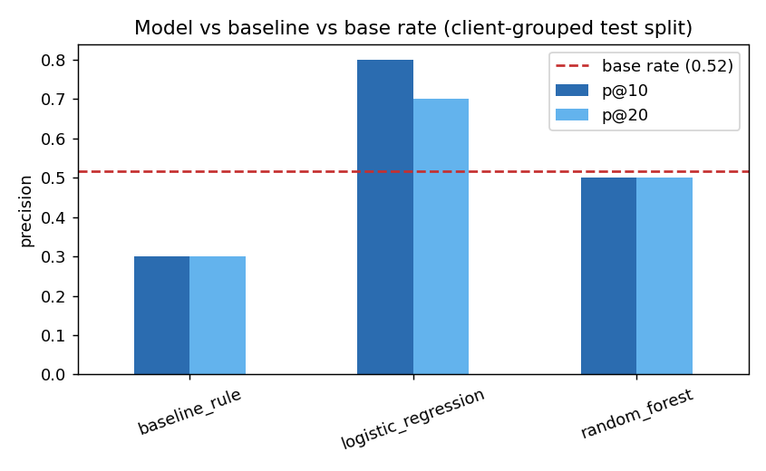
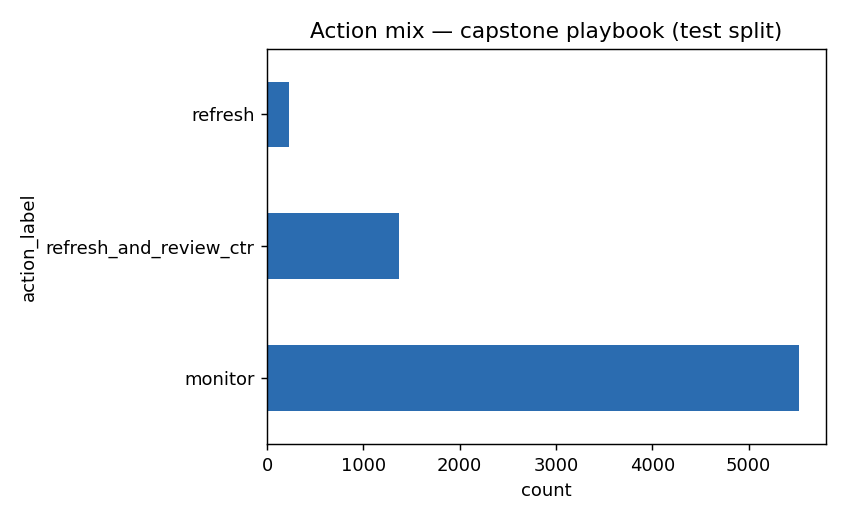

Which of a client's content pages should get reviewed for a refresh first? Using 30,000 real FlyRank content items across 32 clients (90-day search performance windows), a client-grouped logistic regression was compared against a transparent staleness-and-CTR-gap rule on an identical holdout split. The model lifts precision@10 from the rule's 0.30 to 0.80, clearing both the rule and the 0.52 base rate, while a leakage test confirmed the gap is real and not a label leak. The output is a ranked, reason-coded review queue for a content strategist running weekly refresh triage — decision-support, not an automated action.
The problem
A content library grows faster than any one person can review it. Some pages are quietly declining in search visibility; most are fine. A content strategist needs a short, trustworthy list of what to look at first — not a dashboard of everything.
The decision this supports: which pages earn a human's limited review time this week. A wrong call has a real but modest cost — an editor wastes time on a page that didn't need it, or a real decline goes unreviewed until the next cycle. That's exactly the shape of problem where a ranked, explained shortlist beats either "review everything" or "review whatever's newest."
A single hand-written rule — flag anything stale and underperforming — turns out to barely beat guessing (0.30 precision@10 against a 0.52 base rate). The real pattern is messier than an if-statement: staleness only predicts decline in a specific window, and a low click-through rate only means something once you control for where the page ranks and how much traffic it gets. That gap between a simple rule and the actual pattern is the case for a model.
30,000 pages, 32 clients, 90 days
The working dataset is the FlyRank ML Internship starter release: one row per pseudonymous
content item, summarized over a trailing 90-day search performance window, plus a
last-30-days-vs-prior-30-days comparison used to build the label. The same lane also queried the
full production warehouse directly — the March 2026 partition of
fact_content_daily_performance — to build and verify a daily-grain data contract
before settling on the aggregated release for modeling, since it carries the full baseline →
model → validation lineage.
Excluded, on purpose
The first two define the label directly. The window columns are the two halves the label's swing is computed from — leaving any of them in the feature set is the label wearing a different name, confirmed below. The IDs are hashed grouping keys only, never features, and never mapped back to anything identifying.
Public safety. No client names, domains, URLs, page titles, or raw search queries appear anywhere in this dataset, this page, or the underlying repo. Rate columns (CTR, engagement rate) are percentages on a 0–100 scale.
Baseline, then model, then honest validation
The label
is_declining_label = 1 if a page's search impressions dropped more than 10%
from the prior 30 days to the last 30 days, else 0. This is an observed proxy,
not a guaranteed future outcome — a short window can catch a real decline or a seasonal blip
alike.
The baseline rule
Built from two signal checks, not intuition. Staleness turned out to be a mixed signal —
decline rate is elevated specifically in the 91–180 day freshness window
(61.1% vs a 54.2% base rate), but drops back below baseline at the extreme tail (181+ days:
47.1%). "Older is worse" doesn't hold as a straight line; only that specific window does.
CTR vs. position looked backwards at first — until filtering out low-volume noise
(impressions_90d ≥ 300) revealed a clean drop as position gets worse.
The rule: flag a page if it's stale (91–180 days), visible (≥300 impressions/90d), and underperforming its own position tier's expected CTR.
The model
Logistic Regression, compared against a Random Forest — two models, because complexity has to earn its place on the metric that matters here (precision at the top of a ranked queue), not be added by default.
The split
Client-grouped (75/25, seed 42), not row-by-row. Pages from the same client share client-level habits — industry, publishing cadence — so a random row split would let the model partly memorize per-client patterns and look better than it really is. There's no usable timestamp column in this release for a time-aware split, so client-grouped is the honest option available. Client overlap between train and test: confirmed at zero.
The leakage check. Adding the excluded window columns back into the feature set pushes precision@10 from 0.80 to 1.00 and ROC AUC from 0.575 to 0.81 — the exact "score collapses when the leak is removed" signature of a label-derived leak. That confirms both that those columns really were leaking, and that this evaluation setup is sensitive enough to catch it.
Model vs. baseline, same split
| Model | precision@10 | precision@20 | ROC AUC |
|---|---|---|---|
| Baseline rule | 0.30 | 0.30 | 0.49 |
| Logistic Regression | 0.80 | 0.70 | 0.575 |
| Random Forest | 0.50 | 0.50 | 0.597 |
| Base rate (floor) | 0.52 | — | — |

Both models clear the baseline rule and the base rate on precision@10. The two disagree on how they win: logistic regression is the stronger top-of-queue ranker, while random forest has the better overall ROC AUC (0.597 vs 0.575) but only matches the base rate at precision@10/20. That's a real finding, not a footnote — for a reviewer who only ever looks at the top of the queue, the simpler model is the better pick, and the extra complexity of a forest didn't earn its place here.
Where the model is wrong. False positives cluster in mid-confidence pages (probability 0.69–0.85) that look stale and underperforming on paper but didn't actually decline — plausibly because the 91–180 day window is a noisy proxy, not a guarantee. False negatives sit at lower, less confident probabilities (0.34–0.44): the model treats these as uncertain rather than confidently wrong, a healthier failure mode than confident misses.
What this can't claim
- No time-aware validation. This release has no usable timestamp column, so the split is client-grouped, not time-based — a page's behavior a month from now is not directly tested.
- An observed proxy, not a real outcome. The label is a same-window bucket, not a verified future decline.
- Modest discrimination. ROC AUC of 0.575–0.60 is a real lift over guessing, far from a reliable oracle — roughly 2 in 10 top-10 picks are expected to be wrong even under the model's own best-case numbers.
- Traffic-weighted queue. Because both the rule and the playbook lean on
impressions_90d, high-traffic clients structurally dominate the top of the queue. A lower-traffic client with a genuinely urgent problem can rank lower than its urgency warrants. - No query-level or SERP context. A low CTR could mean a stale page, a branded query, a mid-run title experiment, or a SERP feature stealing the click — this data can't tell those apart.
- Cross-sectional, not causal. Nothing here says refreshing a page will cause it to recover — only that it looks worth reviewing first, and why.
The action playbook
Pages are ranked by priority_score = model_probability × impressions_90d, so a
page only ranks high if the model flags real risk and enough people actually see it —
a 0.9-probability page with 5 impressions ranks below a 0.6-probability page with 300,000.

How to use this queue tomorrow
- Start at rank 1, work down. Don't trust a reason code alone — open the page.
- For
refresh_and_review_ctrrows: rule out a branded/navigational query, a mid-run title or meta experiment, and a SERP feature sitting above the result before rewriting anything. - For any row with
ctr = 0.00%at real volume: check for a tracking or pipeline gap first, a content problem second. - Watch for near-duplicate picks from the same client — they can be one content cluster counted twice.
Never automate: auto-publishing or auto-editing, automatic deprioritization or removal, cross-client comparison as a performance judgment (the queue is traffic-weighted, not fairness-weighted), or retraining and threshold changes without a human sign-off.
Run it yourself
Every number and chart on this page is generated by one notebook, runnable end to end from a fresh clone:
pip install -r requirements.txt
jupyter nbconvert --to notebook --execute --inplace work/notebooks/capstone.ipynbRandom seed fixed at 42 everywhere a split or model is trained. This regenerates
work/outputs/capstone_metrics.json (the committed receipts) and both figures on
this page.
Full notebook lineage
- w03_data_contract.ipynb — data contract, verified against the live warehouse
- w04_baseline_score.ipynb — the baseline rule and its signal checks
- w05_model.ipynb — model choice, split design, error analysis
- w06_validation_audit.ipynb — honest-split audit and the leakage confirmation
- w07_action_playbook.ipynb — the ranked-queue design and no-go list
- capstone.ipynb — this page's exact source, runnable end to end
- capstone_report.md — the full written report this page is built from